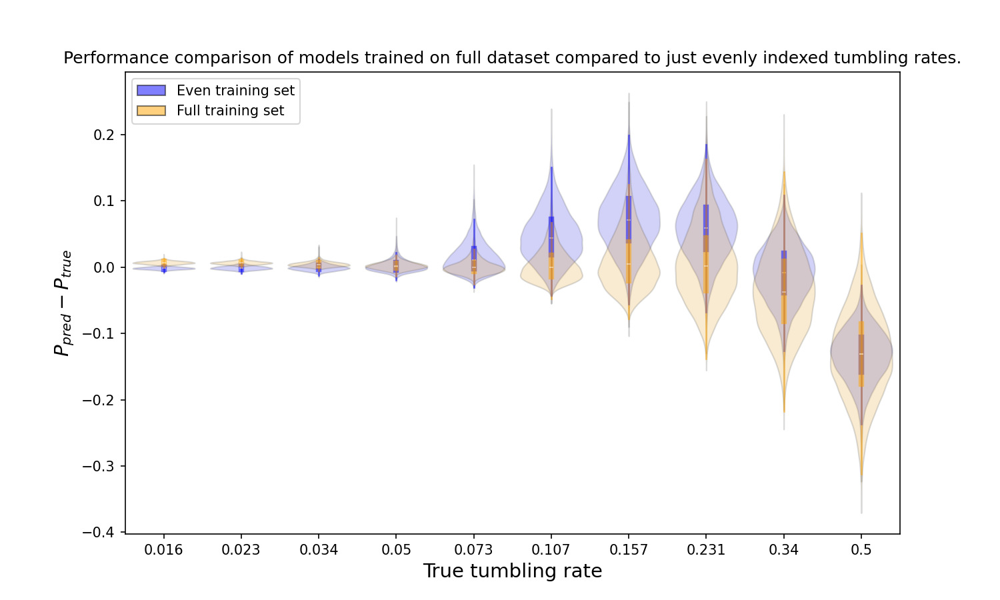
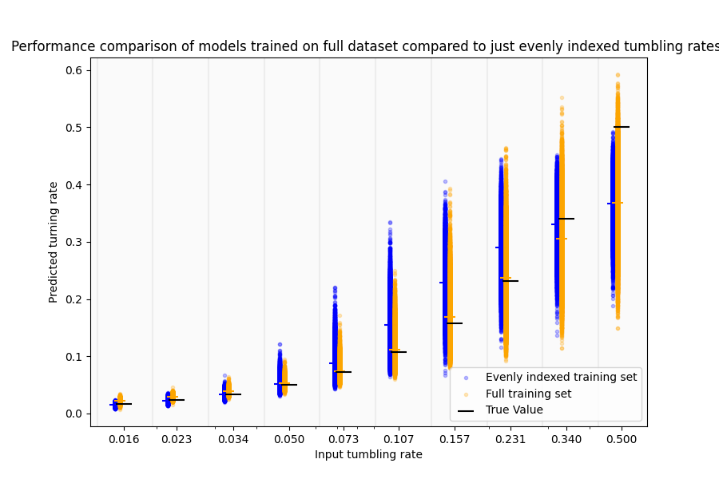
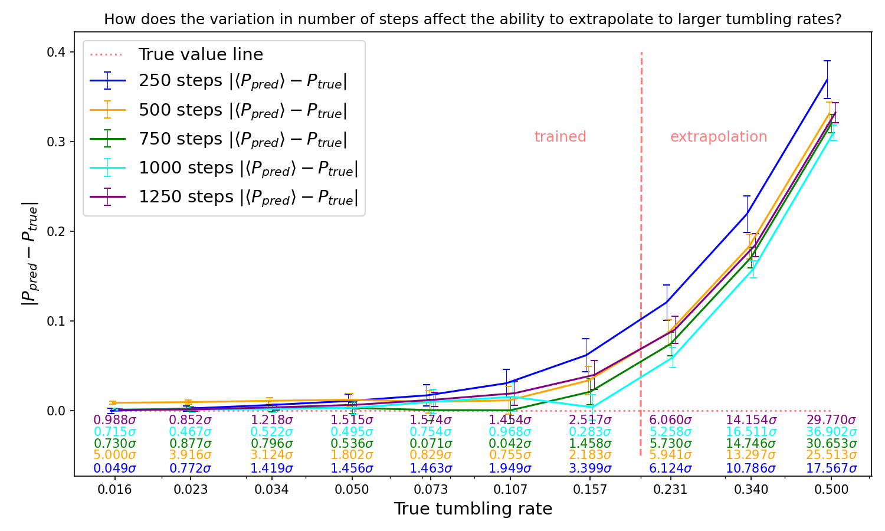
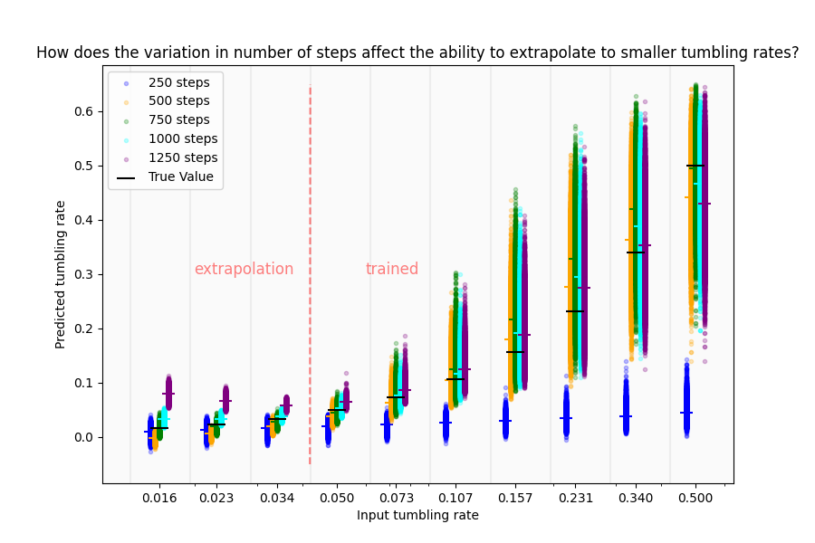
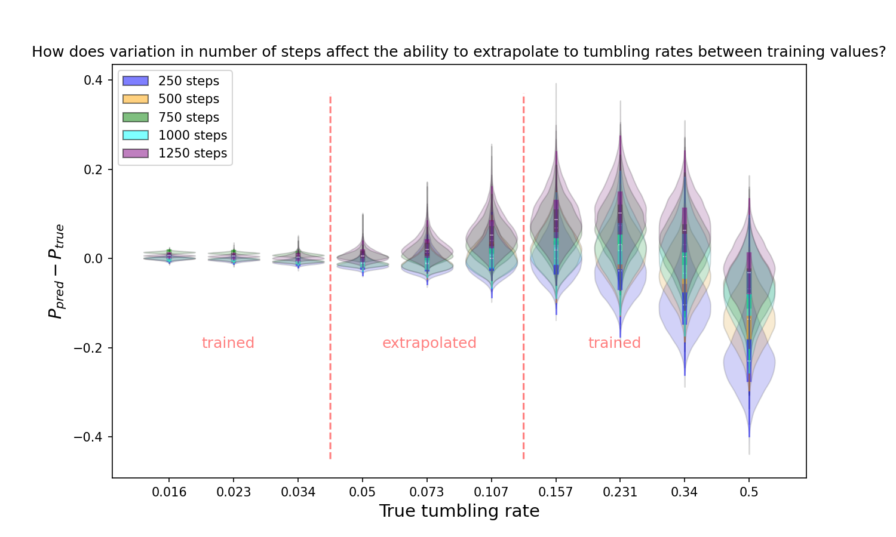
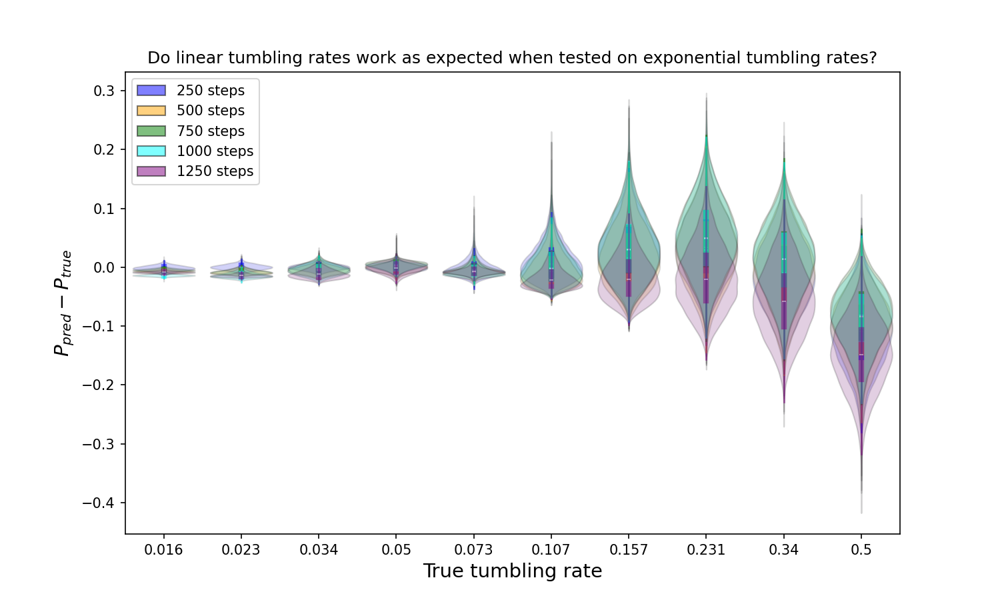
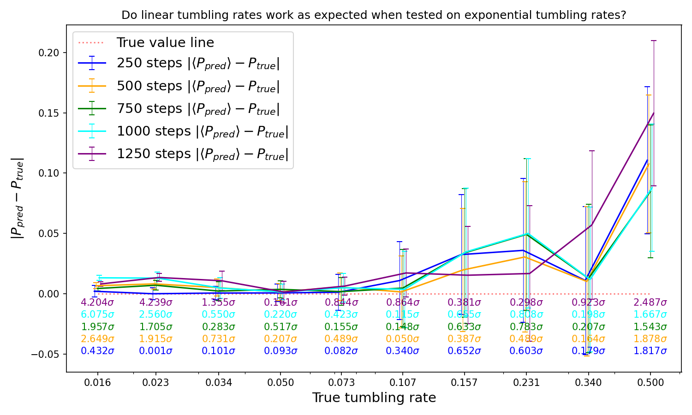

For the first week I focused on understanding the package provided and using it effectively. To test this I created a dataset, trained a model on it, tested the model then did some analysis.
To generate data, the program sampler.py is used and for the set generated here, a desnity of 0.1 is used. This creates by default the evenly indexed tumbling rates 0.016, 0.034, 0.073, 0.157 and 0.340 as shown in Figure 1. To generate the odd set requires another run of the program with the added –odd suffix added. A csv file is also created to keep track of the metadata of these files. The values used are chosen from a exponential scale meaning there is a preference to lower tumbling rates in the dataset.
Figure 1: Initial dataset
The neural network layers used by the previous authors is presumed to have been refine dover time for optimal results for their findings and can be left as is for now. It is found in the cp_network.py and cp_network_multi.py files. I used it to generate a model on firstly the even dataset then once the odd dataset had been generated as wellm, both of them for the second model. Due to the tumbling rates being generated logarithmically, the even dataset is generally made up of lower tumbling rates and when tested will have to interpolate the odd regions. As they can take a while to train and depend highly on the dat generated, their weights are saved for later use including here.
Layers Of Models Used
Code
import tensorflow as tfname1 ="0.1_even"name2 ="0.1_full"model1 = tf.keras.models.load_model(f'../models/week1/{name1}.keras')model2 = tf.keras.models.load_model(f'../models/week1/{name2}.keras')model1.summary()
The models are then both tested on the whole dataset, rather naively the same one which despite a test train split may be overfitted giving falsely high accuracies. This was done through 10 epochs of the whole dataset taking roughly 45 seonds per epoch on my machine (M1 mac mini, no GPU access). I created the notebook dataset_comparison.ipynb to test two models and compare them graphically to see how they differ. Model 1 is trained on just the even indexed datsets, model2 on the entire dataset. The next three plots show the same data in different formats, so here I want to choose which one best represents the data at scale while maintaining a view opf the accuracy. Figure 3 effectively shows that model 1 has trained well to predicted data at low tumbling rates and interpolated well around that region but becomes less precise at higher values, whereas model 2 generalised better but this is to be expected as it was given more data. It also showed why the previous pair who worked on this chose to limit the tumbling rate to 0.5 as it seems the precision is lost aroudn this vlaue. However this could be just because there less data around here due to the logarithmic scale used.

Figure 2: Violin plot of predicted tumbling rates vs. true tumbling rate. Blue model is trained on a dataset made up of the evenly indexed tumbling rates and the orange model from both the evenly and odd tumbling rates.
Figure 3: Line plot of mean predicted tumbling rate vs. true tumbling rate. Blue model is trained on a dataset made up of the evenly indexed tumbling rates and the orange model from both the evenly and odd tumbling rates.

Figure 4: Scatter plot of all predicted tumbling rates vs. true tumbling rates. Blue model is trained on a dataset made up of the evenly indexed tumbling rates and the orange model from both the evenly and odd tumbling rates.
Week 2
The plan going forward is to compare specifically two aprts of the model: extrapolation and dataset size. Last week shwoed that the model even given a relatively limited range of data can interpolate well, however we could generate data of lower tumbling rates and predict them with higher ones inn the test data and see how much accuracy is lost. This can easily be repeated for the opposite to see if the model is well optimised to extrapolate to lower tumbling rates too.
Model 1 is trained on the first half of the data (0.016. 0.023, 0.034, 0.05 & 0.073) and model 2 on the second half (0.107, 0.157, 0.231, 0.34, 0.5). They are both then tested on the whole data to provide the following graphs. Figure 5 shows that spread of predictions for model 1 is significantly smaller than model 2 for all tumbling rates, even very high ones and excels as predicting vlaues on the test data for low tumbling rates but predictably loses this precision at higher ones. Model 2 still has a relatively low spread of predictions for low data and a very high spread even for data it is largely trained on. This could be due to the logarithmic scale of tumbling rates used meaning it actually is trying to fit over a larger range of values than model 1 so has less accuracy.
Figure 6 largely supports this and shows model 2 seems to have an optimal prediction actually outside the its training data at 0.073.
Figure 5: Violin plot of predicted tumbling rates vs. true tumbling rate. Blue model trained on first half of tumbling rates and orange trained on last half of tumbling rates data.
Figure 6: Line plot of mean predicted tumbling rate vs. true tumbling rate. Blue model trained on first half of tumbling rates and orange trained on last half of tumbling rates data.
Figure 7: Scatter plot of all predicted tumbling rates vs. true tumbling rates. Blue model trained on first half of tumbling rates and orange trained on last half of tumbling rates data.
Before starting the next part of training models on differing amounts of data, its worth looking at the code for generating the datasets in sampler.py. The important parts here are (altered here but gives useful information):
Code
tumble =0.5#example tumbling ratesnapshot =int(1/ tumble)iters =int(1000* (1/ tumble))for iteration inrange(iters):# evolve lattice one time step, calls a c file file functionif (iteration % snapshot) !=0:continue
So it will output 1000 snapshots no matter the tumbling rate. However, as mentioned in their report, the characteristic evolution of a particle goes with the inverse of it’s tumbling rate (on average a particle with tumbling probability 0.1 will move in the same direction for 10 time steps). Hence this method allows the system to evolve to a similar level and only output 1000 time frames despite varying length of simulation. Here we generate datasets with a desnity of 0.1 with 250, 500, 750, 1000 and 1250 time steps and compae their performances. Training the models is typically a long process as is testing.
(a) Violin plot of predicted tumbling rates vs. true tumbling rates. Models trained on all tumbling rates at varying numbers of snapshots output for training.
(b) Line plot of mean predicted tumbling rate vs. true tumbling rates. Models trained on all tumbling rates at varying numbers of snapshots output for training.
(c) Scatter plot of all predicted tumbling rates vs. true tumbling rates. Models trained on all tumbling rates at varying numbers of snapshots output for training.
Figure 8: Plots comparing 5 models trained on 5 dataset sizes, model 1 being 250 snapshots, 2 500, 3 750, 4 1000 and 5 1250.
The main important things to mention here are model4 uses the 1000 snapshots used so far until this run, which is the cyan set. All models are then tested on the same dataset of 1000 snapshots, however this is a different run completely to the data used to train model4. Figure 8 (b) is the most useful graph here and shows an interesting result that the dataset with only 500 snapshots, model 2, has the highest precision compaed to accuracy for all tumbling rates (except for 0.05) until around 0.1 where it quickly becomes least accurate (except 0.34). This could be because the clustering that occurs in this se is similar to the testing set so the model is uniquely capable of predicting this data.
Week 3
After the results of last week some further testing is taken. Firstly we can look at the kernels of the models to compare how they are visually and then if there are patterns that are found, they can be explored. The result that a model trained on less data can be more accurate than one with seemingly signifcantly more is unexpected so will be built on. For this we will try running a simulation with the same parameters multiple times to see if there is a significant difference between the models. The key reason is likely that the test data has patterns closest to the model with less data hence why it was a good predictor, so we can expand this by using different test data and see if the same model is still most accurate. Another things to test is to see if the model is still a good predictor for data its not trained on i.e. extrapolate again. Finally another thing we want to see is more extreme data to see if the model can be broken orbe made siginificantly better at predicting.
To start on kernel analysis is simple as we have the models saved. However when trying to see if I could change the size of the kernels to display more information than just a 3x3 grid, I found anothe rmodel using 5x5 kernels in the code. It seemed like it could have been used by the previus group possibly more so I re-trained on the 250 snapshots data. This took 228 seconds, compared to 75 seconds with the other model. The results can be seen in Figure 9 (a), Figure 9 (b) and Figure 9 (c). The lack in difference in results prompted me to do the same for 1250 snapshots, where the training took 555 seconds before, now takes close to three quarters of an hour. The results of testing are shown in but due to the time increase, the original model will be continued to be used predominantly.
(a) Violin plot of predicted tumbling rates vs. true tumbling rate. Model 1 is old architecture, model 2 the new, slower one.
(b) Line plot of mean predicted tumbling rate vs. true tumbling rate. Model 1 is old architecture, model 2 the new, slower one.
(c) Scatter plot of all predicted tumbling rates vs. true tumbling rates. Model 1 is old architecture, model 2 the new, slower one.
Figure 9: Plots comparing two network architectures, model 1 with 3x3 kernels and model 2 with 5x5 kernels, also shown in code snippet above. Model 1 took 75 seconds and model 2 took 228 seconds to train.
And now for the comparisons of the architecture for larger amounts of data.
(a) Violin plot of predicted tumbling rates vs. true tumbling rates. Model 1 is old architecture, model 2 the new, slower one.
(b) Line plot of mean predicted tumbling rate vs. true tumbling rates. Model 1 is old architecture, model 2 the new, slower one.
(c) Scatter plot of all predicted tumbling rates vs. true tumbling rates. Model 1 is old architecture, model 2 the new, slower one.
Figure 10: Plots comparing two network architectures, model 1 with 3x3 kernels and model 2 with 5x5 kernels, also shown in code snippet above. Model 1 took 9 minutes and model 2 took 45 minutes to train.
Now to compare the models with extrapolation I repeat the method for week 2 but in three overarching steps. One where I remove the first 3 tumbling rates from the data, one where I remove the last three tumbling rates from the data and one where i remove a middle three datasets (0.05, 0.073, 0.107). This is repeated for all datasets as well. This took a while to generate the models but the only other important information here is that from this point on the test dataset will now be used in it’s entirety instead of just a split. This is because that data is not being used for training so the whole data can be used for validation. This makes testing take a while longer.
(a) Violin plot of predicted tumbling rates vs. true tumbling rates.

(b) Line plot of mean predicted tumbling rate vs. true tumbling rates.
(c) Scatter plot of all predicted tumbling rates vs. true tumbling rates.
Figure 11: Plots comparing how the size of a dataset affects the model, model 1 is trained on 250 snapshots, 2 on 500, 3 on 750, 4 on 1000 and 5 on 1250. The models here are all trained on a subset of the tumbling rates, where the largest 3 (0.231, 0.340 and 0.500) are not used in training.
(a) Violin plot of predicted tumbling rates vs. true tumbling rates.
(b) Line plot of mean predicted tumbling rate vs. true tumbling rates.

(c) Scatter plot of all predicted tumbling rates vs. true tumbling rates.
Figure 12: Plots comparing how the size of a dataset affects the model, model 1 is trained on 250 snapshots, 2 on 500, 3 on 750, 4 on 1000 and 5 on 1250. The models here are all trained on a subset of the tumbling rates, where the lowest 3 (0.016, 0.023 and 0.034) are not used in training.

(a) Violin plot of predicted tumbling rates vs. true tumbling rates.
(b) Line plot of mean predicted tumbling rate vs. true tumbling rates.
(c) Scatter plot of all predicted tumbling rates vs. true tumbling rates.
Figure 13: Plots comparing how the size of a dataset affects the model, model 1 is trained on 250 snapshots, 2 on 500, 3 on 750, 4 on 1000 and 5 on 1250. The models here are all trained on a subset of the tumbling rates, where the middle 3 (0.05, 0.073, 0.107) are not used in training.
Repeated Models
Here I will run the same simulation of 1000 snapshots with density 0.1 as has been used throughout this study and train a model on each 4 of these repetitions. I can then compae their performances to compare to previous and future uses to use as a basis of how important the clustering of the simulation is or if the significance of chosen parameters is what gives rise to differences in model performance.
(a) Violin plot of predicted tumbling rates vs. true tumbling rates.
(b) Line plot of mean predicted tumbling rate vs. true tumbling rates.
(c) Scatter plot of all predicted tumbling rates vs. true tumbling rates.
Figure 14: Plots comparing how 4 models based off 4 distinct simulations with the same parameters compare. Any variation can be attributed to how much the randomness of each simulation affects the prediction, including similarities to the test data.
Week 4
Firstly I had some work carried over from week 3. This was to take the kernels generated by the neural network and compare their shape to a set of filter matrices that are used in image processing to see if the machine learning had naturally replicated them. This is carried out in edge_filters.ipynb. A few changes are made but we can see how close each kernel is to each filter and sort them by this closeness with normalised magnitudes. Additionally, the kernel analysis will be moved across to another file as it is a distinct study compared to the model performance here.
We also looked back over the work I did from last week on the performance on the network on predictions and noticed something strange about particularly Figure 12 (a). Here the dataset with the lowest amount of training data did the best prediction but fitted to its trained tumbling rates worst, whereas the dataset with the most training data struggled to predict to lower tumbling rates. Two possible ways of investigating this will be carried out: sample the tumbling rates linearly instead of logarithmically and repeat the same steps and the second method is to see if the model is overfitting by looking at the loss of the training and seeing if the number of epochs is limiting the training of the larger dataset.
Test loss comes from the following code:
Code
# print("Evaluate on test data:")# results = model.evaluate(x_val, y_val, batch_size=64, verbose=0)# print("Test loss:", results[0])# print("Test accuracy:", results[1])
Reminder, upper means the training data includes the upper 7 tumbling rates, lower the lower 7 tumbling rates and outer the outer 7 tumbling rates.
Clearly there is some difference between not only the different data sizes but also for the tumbling rates chosen. I’ll get advice on what to do about this and then hopefully have better adjusted models. For now I can edit the original code that generated the datasets to output some linearlly selected tumbling rates. The belief is that because the changes in evolution happen on an exponential scale there will be big jumps and plateaus between selected tumbling rates.
Also just a note for myself, I still havent pushed the data sizes to extremes to break the model yet.
Linear tumbling rates
Firstly data was trained on tumbling rates between the previously used values: 0.016 and 0.5 with 10 equally spaced tumbling rates between them. In Figure 15 it’s first tested on the original exponentially spaced tumbling rates, then in Figure 16 they are then tested on also linearlly spaced tumbling rates data.

(a) Violin plot of predicted tumbling rates vs. true tumbling rates.

(b) Line plot of mean predicted tumbling rate vs. true tumbling rates.
(c) Scatter plot of all predicted tumbling rates vs. true tumbling rates.
Figure 15: Plots comparing how differently sized datasets from tumbling rates generated linearly rather than exponentially predict exponentially spaced test data.
(a) Violin plot of predicted tumbling rates vs. true tumbling rates.
(b) Line plot of mean predicted tumbling rate vs. true tumbling rates.
(c) Scatter plot of all predicted tumbling rates vs. true tumbling rates.
Figure 16: Plots comparing how differently sized datasets from tumbling rates generated linearly rather than exponentially predict also linearly spaced test data.